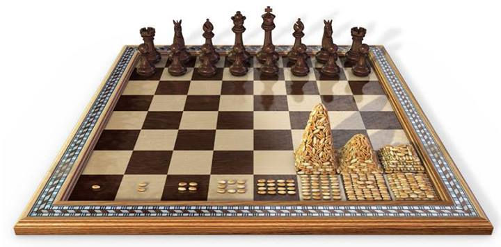

C7 Les boucles WHILE ⚓︎

Boucle WHILE⚓︎
✒ Premiers exemples⚓︎
À la différence essentielle des boucles for, dont on peut savoir à l'avance combien de fois elles vont être exécutées, les boucles while sont des boucles dont on ne sort que lorsqu'une condition n'est plus satisfaite.
Avec donc le risque de rester infiniment bloqué à l'intérieur !
a = 0
while a < 3:
print("ok")
a = a + 1
print("fini")
ok
ok
ok
fini
✒ Syntaxe générale⚓︎
A retenir : Écriture d'une boucle while
while condition:
instruction1
instruction2
...
instructionN

La condition⚓︎
La condition est un booléen, c'est-à-dire une expression que Python évaluera à True ou à False.
Exemple de booléens résultant d'une évaluation :
>>> 1 < 3
True
>>> 5 > 7
False
>>> a = 10
>>> a > 8
True
✒ Les pièges ...⚓︎
piège n°1 : ne JAMAIS SORTIR de la boucle⚓︎
Exemple :
Le programme suivant :
a = 0
while a < 3:
print("ok")
a = a + 1
a = a * 0
print("ce texte ne s'écrira jamais")
ok et ne jamais s'arrêter
piège n°2 : ne JAMAIS ENTRER dans la boucle⚓︎
Exemple :
Le programme suivant :
a = 0
while a > 10:
print("ce texte non plus ne s'écrira jamais")
a = a + 1
print("fini")
fini et s'arrêter.
a = 0
while a > 10:
print("ce texte non plus ne s'écrira jamais")
a = a + 1
print("fini")
fini
La boucle infinie a été présentée comme un danger qu'il faut éviter.
Pourtant, dans quelques situations, il est d'usage d'enfermer volontairement l'utilisateur dans une boucle infinie.
C'est notamment le cas des codes p5 où la fonction draw() est une boucle infinie dont on ne sort que lorsqu'un évènement est intercepté (par exemple, le clic sur la fermeture de la fenêtre d'affichage).
Ou lors de la création d'un jeu....
Observez et exécutez le code suivant :
while True :
reponse = input("tapez sur la lettre S du clavier pour me sortir de cet enfer : ")
if reponse == 'S' or reponse == 's':
break
print("merci, j'étais bloqué dans une boucle infinie")
tapez sur la lettre S du clavier pour me sortir de cet enfer : E
tapez sur la lettre S du clavier pour me sortir de cet enfer : S
merci, j'étais bloqué dans une boucle infinie
- le début du code :
while Trueest typique des boucles infinies volontaires. On aurait tout aussi bien pu écrirewhile 3 > 2(on rencontre même parfois deswhile 1) - vous avez découvert l'expression
breakqui comme son nom l'indique permet de casser la boucle (cela marche pourwhilecomme pourfor) et donc d'en sortir. Son emploi est controversé parmi les puristes de la programmation. Nous dirons juste que c'est une instruction bien pratique.
EXERCICES⚓︎
Exercice 1
Trouver le plus petit nombre entier \(n\) tel que \(2^n\) soit supérieur à 1 milliard.
n = 1
while ...:
print("trop petit")
n...
print("trouvé : ",n)
n = 1
while 2**n<1000000000:
print("trop petit")
n+=1
print("trouvé : ",n)
Exercice 2
Réécrire le programme suivant en utilisant une boucle while :
somme = 0
for i in range(10):
somme = somme + i
print(somme)
somme=0
n=0
while n<10:
somme+=n
n+=1
print(somme)
45
Exercice 3 : Dépassement d'un seuil (Utile en spécialité Mathématiques)
La boucle while est souvent utilisée pour déterminer le rang à partir duquel un certain seuil sera dépassé ou atteint.
Voci un premier exemple :
On dispose d'un capital de 1 000 €, et chaque année, on perçoit 5% d'intérêts et on ajoute 500 € sur le compte.
Au bout de combien d'année la valeur du compte dépassera-t-elle les 10 000€ ?
Exécuter le progtramme suivant et observer pas à pas les valeurs des variables.
def nombreAnnees(capital): # je crée un fonction nombreAnnees associé au paramétre d'entrée capital
annee = 0 # je crée une variable année que j'initialise à 0
while capital<=10000: # Je cée une boucle qui sera exécutée tant que capital est inférieur ou égal à 10 000
capital = capital * 1.05 + 500 # J'augmente la valeur de capital
print("Capital : ", capital)
annee += 1 # J'incrément de 1 la variable annee
print('Année : ', annee)
return annee # la fonction retourne la valeur de la variable année
nombreAnnees(1000) # J'exécute la fonction nombreAnnees avec 1000 comme paramètre (correspondant au capital de départ)
Exercice 4 : Dépassement d'un seuil (Utile en spécialité Mathématiques)
La population d'un village de 1000 habitants diminue chaque année de 1%.
Ecrire un fonction qui calcule le nombre d'années au bout duquel la population de ce village aura diminué de moitié.
def baisse_pop(pop_village):
annee=0
pop_finale=pop_village/2
while pop_village>pop_finale:
pop_village*=0.99
annee+=1
return annee
pop_village=1000
baisse_pop(pop_village)
Exercice 5
Écrire un programme qui invite l'utilisateur à saisir son mot de passe puis affiche le message "Bienvenue" quand il saisit le bon. Le mot de passe est "PIZZA".
while True:
msg=input("Entrer votre mot de passe : ")
if msg=='PIZZA':
break
print("Bienvenue")
msg=""
while msg != 'PIZZA':
msg=input("Entrer votre mot de passe : ")
print("Bienvenue")
Exercice 6 : Jeu de dé
Compléter le programme suivant permettant d'afficher le nombre de lancers de dé effectué par le joueur pour obtenir un 6 (Remplacer les ... pour répondre aux commentaires associés).
from random import* # Appel de la bibliothèque random pour pouvoir utiliser la fonction aléatoire randin()
x=randint(1,6) # Simule le lancé du joueur : affecte à la variable x un nombre entier aléatoire compris entre 1 et 6
n=1 # On affecte à la variable n le nombre de lancers effectués : ici 1 pour le 1er lancer
...
while ... : # Compléter la condition de la boucle permettant de répondre au sujet de l'exercice
x=... # Simuler un nouveau lancer de dé
... # Afficher le score du dé
n ... # Comptabiliser le nombre de lancers effectués depuis le début du jeu
print(" le joueur a éffectué", n, "lancers pour obtenir un 6") # Afficher le nombre de lancers pour obtenir un 6
from random import* # Appel de la bibliothèque random pour pouvoir utiliser la fonction aléatoire randin()
x=randint(1,6) # Simule le lancé du joueur : affecte à la variable x un nombre entier aléatoire compris entre 1 et 6
n=1 # On affecte à la variable n le nombre de lancers effectués : ici 1 pour le 1er lancer
print(x)
while x!=6 : # Compléter la condition de la boucle permettant de répondre au sujet de l'exercice
x=randint(1,6) # Simuler un nouveau lancer de dé
print(x) # Afficher le score du dé
n+=1 # Comptabiliser le nombre de lancers effectués depuis le début du jeu
print(" le joueur a éffectué", n, "lancers pour obtenir un 6") # Afficher le nombre de lancers pour obtenir un 6
Exercice 7 : L'échiquier de Sissa
histoire
La légende se situe 3 000 ans av. J.C.
Le roi Belkib (Indes) promit une récompense fabuleuse à qui lui proposerait une distraction qui le satisferait. Lorsque le sage Sissa, fils du Brahmine Dahir, lui présenta le jeu d'échecs, le souverain, demanda à Sissa ce que celui-ci souhaitait en échange de ce cadeau extraordinaire.
Sissa demanda au prince de déposer un grain de riz sur la première case, deux sur la deuxième, quatre sur la troisième, et ainsi de suite pour remplir l'échiquier en doublant la quantité de grain à chaque case.
Le prince accorda immédiatement cette récompense sans se douter de ce qui allait suivre.
Son conseiller lui expliqua qu'il venait de précipiter le royaume dans la ruine car les récoltes de l'année ne suffiraient pas à payer Sissa.
En savoir plus : histoire
On place un grain de blé sur la 1ère case d'un échiquier, deux grains sur la 2ème case, quatre sur la 3ème et ainsi de suite en doublant la quantité de grains à chaque case.

Compléter le programme ci-dessous permettant de déterminer le nombre minimum de cases à remplir afin que le nombre total de grains de blé sur l'échiquier dépasse une quantité Q saisie en entrée.
def sissa(Q): # je crée un fonction sissa avec comme paramètre d'entrée le nombre de grains souhaité Q
S = 0 # Je crée une variable S initilisée à 0 permettant de totaliser le nombre de grains de riz
nb = 0 # Je crée une variable nb initilisée à 0 permettant de connaitre le nombre de case nécessaire
while S<Q: # J'indique la condition de la boucle permettantde répondre à l'exercice
... # J'actualise le nombre de case
S=... # J'actualise le nombre de grains présents sur l'échiquier
print('case n°', nb,S)
return(nb) # La fonction renvoie le nombre de cases nécessaire nb
sissa(8) # J'appele la fonction sissa avec la valeur 8. Le programme doit me renvoyer le nombre 4 (= nb de cases nécessaires)
def sissa(Q): # je crée un fonction sissa avec comme paramètre d'entrée le nombre de grains souhaité Q
S = 0 # Je crée une variable S initilisée à 0 permettant de totaliser le nombre de grains de riz
nb = 0 # Je crée une variable nb initilisée à 0 permettant de connaitre le nombre de case nécessaire
while S<Q: # J'indique la condition de la boucle permettantde répondre à l'exercice
nb+=1 # J'actualise le nombre de case
S=S+2**(nb-1) # J'actualise le nombre de grains présents sur l'échiquier
print('case n°', nb,S)
return(nb) # La fonction renvoie le nombre de cases nécessaire nb
sissa(8) # J'appele la fonction sissa avec la valeur 8. Le programme doit me renvoyer le nombre 4 (= nb de cases nécessaires)
T6_1_4_WHILE.pdf